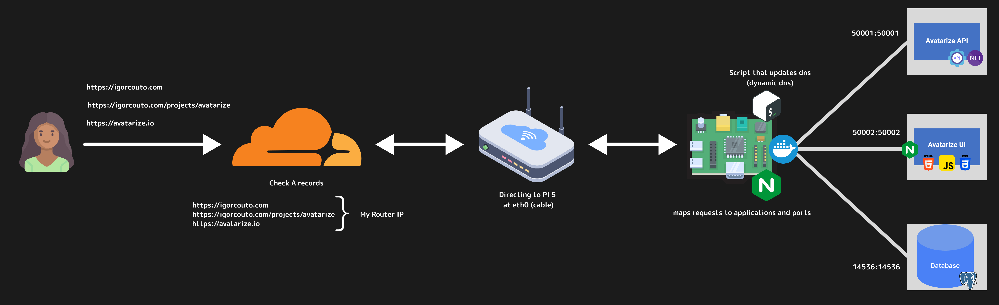
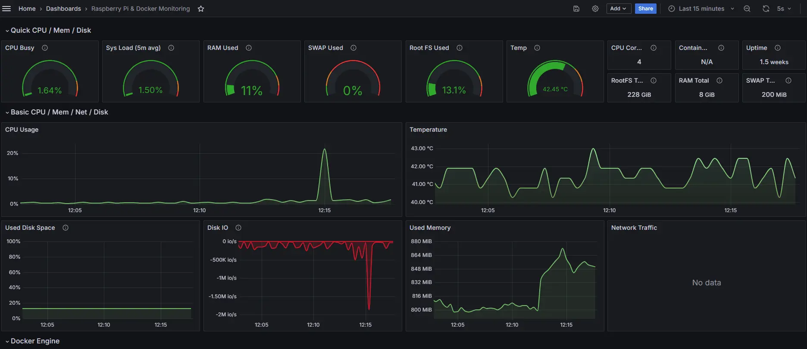

I recently started building a home server with a Raspberry Pi 5. I'm interested in networking, security, and DevOps, and I figured a personal server would be a great way to experiment, learn and have my own playground.
Why Bother with a Home Server?
Well, there were a few reasons. For one, it's an incredible learning opportunity. I'm diving deeper into networking, security, and experimenting with deployment practices and pipelines. This server acts as my sandbox—a place where I can break things, fix them, and ultimately learn a ton in the process.
On top of that, I have several personal projects and apps that I've been working on. Hosting them myself is the perfect way to show them off, and it's like having my very own "production environment".
Why Raspberry Pi 5?
When it came time to choose the hardware, I went with the Raspberry Pi 5. Here's why:
Good Specs:
- 64-bit quad-core ARM Cortex-A76 processor clocked at 2.4 GHz
- VideoCore VII GPU
- 8 GB of LPDDR4X RAM
- PCIe 2.0 (It's possible to force PCI Express Gen 3.0 speeds)
Compact Size: One of the biggest factors in choosing the Raspberry Pi was its size. Living in an apartment means space is tight, and I don't have a dedicated area for a full-sized server. The Raspberry Pi sits neatly beside my router, and it's amazing how small it is considering the power it packs.
Expandable: I grabbed a few extras to beef up my setup, including the Pimoroni NVMe Base for faster SSD storage, a GeekPi Cooler and a CAT 8 Ethernet Cable. Although a CAT 6 would have been sufficient, the small price difference led me to choose the CAT 8, because why not?
Energy Efficiency: The Raspberry Pi 5 is pretty good on power, idling around 2.6W (or 3.5W with the NVMe base attached). It's nice to have something powerful yet energy-efficient.
Budget: All in all, I spent just over 200 euros on the whole setup: Raspberry Pi 5 (€89,99), Pimoroni NVMe Base (€19,30), GeekPi Cooler (€15,23), Patriot P300 1TB SSD (€77,21), and an Ethernet Cable (€3,94). Although it is not the cheapest setup possible, it's ok considering its size and potential.

Getting into Network Configuration and DNS
One of the first things I did was sort out the network configuration. I'm using Cloudflare to manage my domain names. I've got a few projects hosted on this server, including: igorcouto.com, avatarize.io, activities-api.com and so on.
Configuring the server, firewall, and router was a real eye-opener. I learned a ton about networking and security, from setting up DNS records to tweaking firewall rules to keep things locked down. Additionally, setting up the environment on an ARM (aarch64) processor was a challenging experience.
Serving Applications
My Raspberry Pi is running Nginx, which is doing a great job of serving up my websites, apps, and APIs. Everything is isolated in Docker containers, keeping things organized and secure.
I've also integrated GitHub Actions into my projects, creating a complete CI/CD pipeline. This allows me to automatically build, test, and deploy updates directly to the server, ensuring that everything runs smoothly without manual intervention.
Docker and GitHub Actions together provide a streamlined and efficient way to manage deployments, so I can focus on development without worrying about the technicalities of getting updates live.
Observability
To monitor everything, I set up Grafana with Prometheus and Loki. Now I can keep tabs on network usage, memory, CPU, temperature, logs, and more. It's satisfying to see all those metrics in real-time, and it helps me catch any issues before they become real problems. Even better, I've configured alerts to notify me via email if certain conditions are met.
Conclusion
So, that's my Raspberry Pi 5 home server in a nutshell. It's been really satisfying to see my projects live on something I built myself. Whether you want to host your own projects or simply enjoy experimenting with technology, setting up a home server is an excellent way to get hands-on experience!